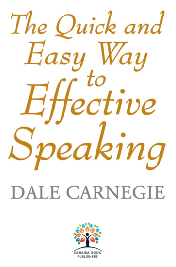

Book Analysis: The Quick and Easy Way to Effective Speaking by Dale Carnegie

Many of us are trying to improve our public speaking skills and recently came across this fabulous book by Dale Carnegie which is full of tips along with stories and would love to share it with you all.
About Author:
Dale Carnegie (1888–1955) was an American writer and lecturer and the developer of famous courses in self-improvement, salesmanship, corporate training, public speaking plus interpersonal skills. Today, numerous writers utilize their unique styles to validate various points and arguments within their work. In contemporary literature, it is common for authors to employ their individual writing styles as a means of supporting and explaining their perspectives and ideas.
About Book:
This book is collections of many practical stories from the real-life situations of different speakers at different occasions. It is divided into four parts:
- Basic principles of effective speaking
- Techniques of effective public speaking
- The three aspects of every speech
- The two methods of delivering a talk
Prior to delving into the main subject matter, the author sets the stage by providing readers with an introductory pep talk and offering general information about various aspects of public speaking. This approach aims to prepare the audience for the discussion that will follow and ensure they have a foundational understanding of the topic at hand.
- Getting facts about fear of public speaking
- Prepare in proper way which doesn’t mean memorizing your talk word by word.
- Predetermine your mind to success and belief in your cause will helps a lot.
- Act Confident: To feel brave, act as if we were brave, use all of our will to that end, and a courage-fit will very likely replace the fit of fear.
Most of the rules are applicable to every kind of speech whether it’s an introductory, short informative speech, long speech or impromptu speech. And these principles are:
- Acquiring the Basic Skills: No one is silver tongued orator and we all have to start from scratch. Try your best to develop an ability to let others look into your head and heart. Learn to make your thoughts your ideas, clear to others, individually, in groups, in public.
- Develop Confidence: You won’t feel confident until you are prepared and to prepare any topic you should brood over our topic until it becomes mellow and expansive…then put all ideas down in writing, just a few words—you will find it easier to arrange and organize these loose bits when you come to set your material in order. Then practice it as much as possible even when you are talking with your friend to get constant feedback. That way you will earn right to talk.
- Look for topics in your background and be excited about it: In that way you will be eager to share your thoughts with your audience but be warmly sincere with your audience too.
- Limit your subject, it should not be too generic or covers too many grounds.
- Plan your talk: It is essential for any rational individual to have a well-thought-out plan before embarking on the construction of a house, just as it is crucial for effective public speaking. Planning involves strategizing how to begin the introduction in a captivating manner, such as by posing a question or sharing a compelling story, and concluding the talk with a concise summary. It is important to note that starting with an apology is not advisable in either scenario.
- 5-W formula will help in the planning part: When? Where? Who? What? and why?
- Vitalizing the Talk: Vitality, aliveness, enthusiasm—these are the first qualities which always considered essential in a speaker. For technical terms compare the strange with the familiar.
- Convince your audience: Every idea, concept, or conclusion which enters the mind is held as true unless hindered by some contradictory idea. That boils down to keeping the audience yes-minded. You can do this only by showing respect and affection for your audience.
- Practice: The person who shines as a speaker prepares himself/herself by making countless talks that are never given. Such talks really are not impromptu they are talks with general preparation.
In summary, start your talk by giving us the details of your example, an incident that graphically illustrates the main idea you wish to get across. In specific clear cut terms give your Point, tell exactly what you want your audience to do; give your Reason, that is, highlight the advantage or benefit to be gained by the listener when he does what you ask him to do.
Amazing quotes:
- Two minutes before I start, I would rather be whipped than start; but two minutes before I finish, I would rather be shot than stop.
- If you care enough for a result, you will most certainly attain it.
- To be yourself in a world that is constantly trying to make you something else is the greatest accomplishment.
- For better or worse, you must play your own instrument in the orchestra of life.
- I always try to get ten times as much information as I use, sometimes a hundred times as much.
- If you can’t write your message in a sentence, you can’t say it in an hour.
- I am so excited about life that I cannot keep still. I just have to tell people about it.
- Four ways, in which we have contact with the world. What we do, how we look, what we say, and how we say it.
- When a man is under the influence of his feelings, his real self comes to the surface.
- If we have inclusive sympathy, we have the key that unlocks the door to the audience's heart.
- You can make more friends in two months by becoming interested in other people than you can in two years by trying to get other people interested in you.
- Think as wise men do, but speak as the common people do.
- The success of your presentation will be judged not by the knowledge you send but by what the listener receives.
- When dealing with people, remember you are not dealing with creatures of logic, but creatures of emotion.